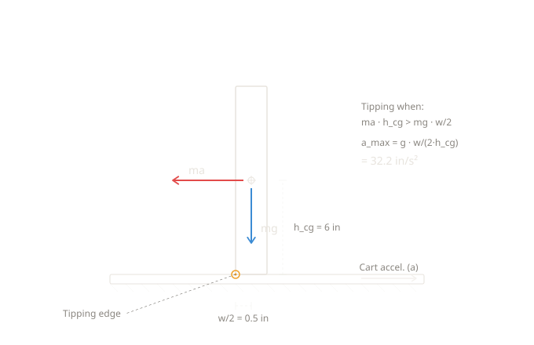
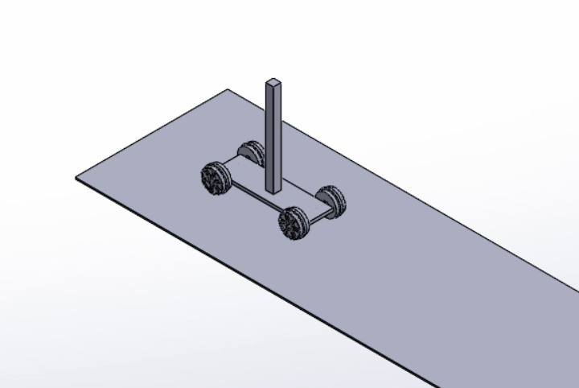
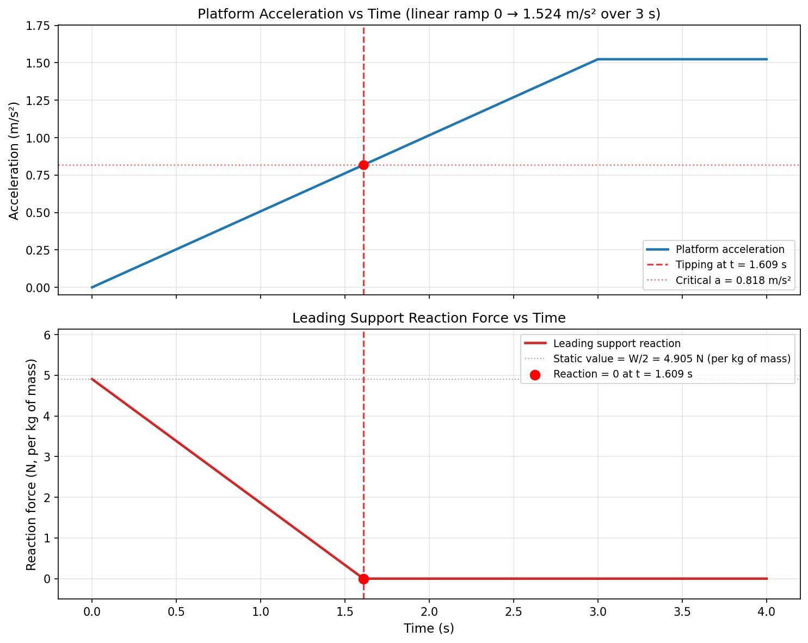
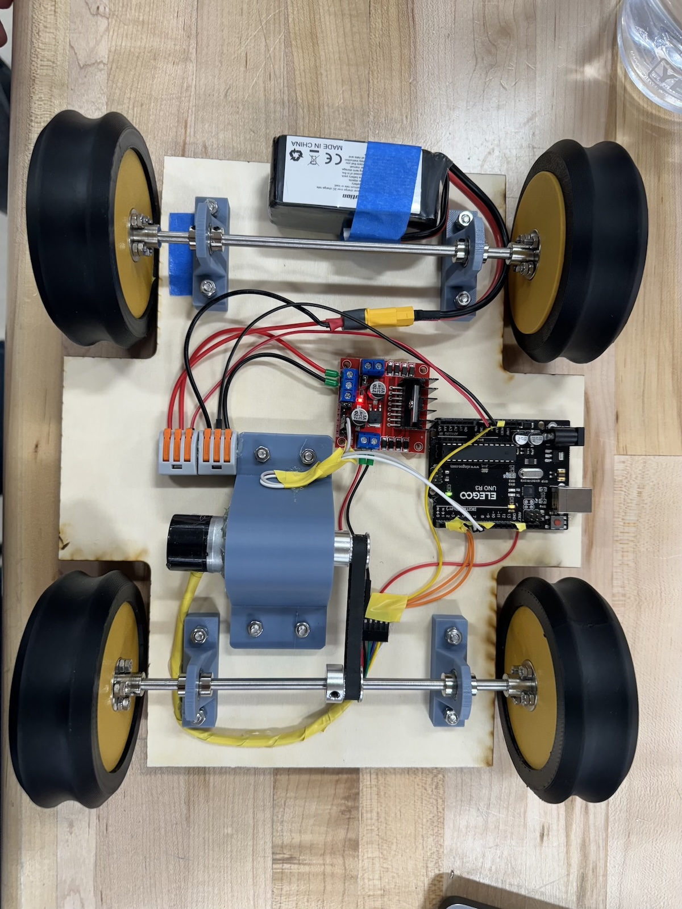
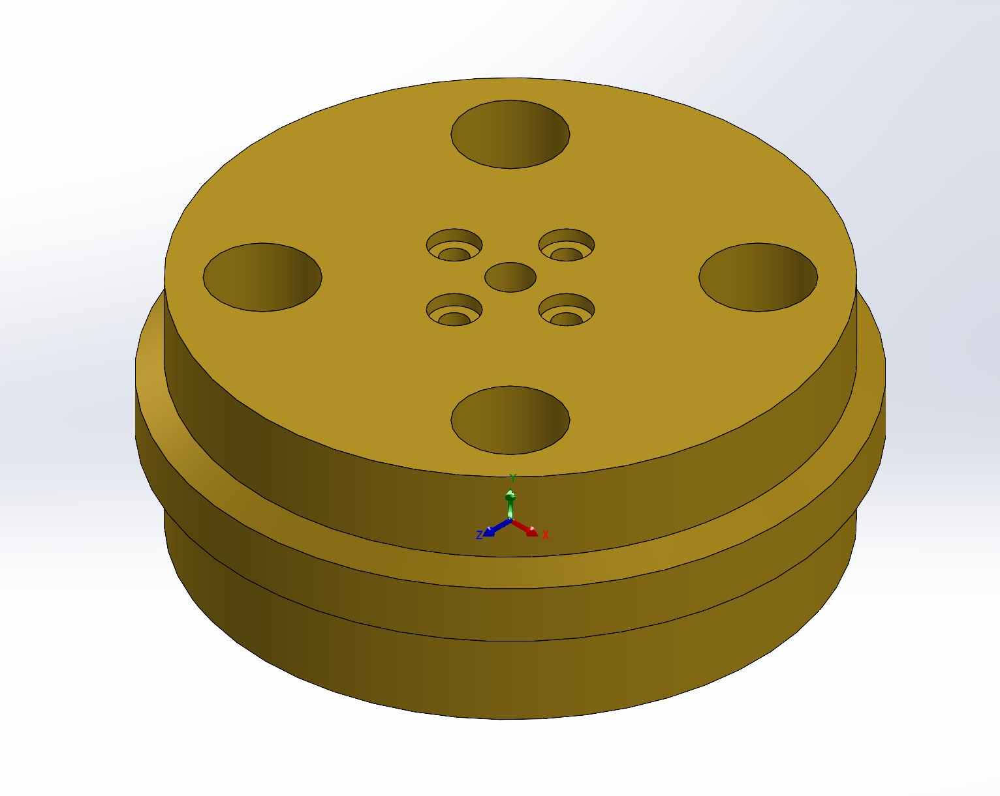

Overview
The challenge: transport a 1-foot tall aluminum bar (8020 1010 extrusion) across a variable distance of 5–10 feet, there and back, as fast as possible — without it toppling. The bar sits freely on a horizontal platform with no glue, fasteners, or side supports. The only thing keeping it upright is a carefully controlled motion profile.
This project had two deliverables. The first was an individual SolidWorks multibody simulation to model the system dynamics and determine the theoretical minimum transport time. The second was a team-built physical prototype that competed in a class-wide time trial, with the travel distance selected at random before each run.
Our approach centered on two things: deriving the analytical tipping limit to set hard constraints on acceleration, and then building a mechanically rigid cart so the control software could work reliably. The final system used a belt-driven rear axle, encoder-based speed feedback, and a jerk-limited trapezoidal motion profile running on an Arduino UNO.
Design Concepts
The first step was sketching out how to convert motor rotation into linear cart travel while keeping the platform stable enough for the bar. We explored a few layouts before settling on a rear-wheel-drive belt transmission.


The chosen design uses a 12V gear motor connected via timing belt to a pulley on the rear axle, which drives both rear wheels. The front axle is unpowered — it sits in bearings and supports free-spinning wheels. The 8020 bar stands directly on the flat plywood platform, with every component mounted underneath to keep the top surface clear.
Design rationale: A belt drive was chosen over direct gear coupling for its compliance — the slight elasticity in the belt absorbs motor startup transients that would otherwise jolt the bar. It also allows flexible motor placement, keeping the center of gravity low.
Advantages
The belt transmission provides smooth power delivery with minimal backlash, and the motor can be positioned low in the chassis for stability. The simple two-axle layout keeps the part count low and the assembly rigid. Rear-wheel drive avoids the complexity of steering geometry — the cart only needs to travel in a straight line.
Disadvantages
Belt tension is critical — too loose and the belt skips teeth under hard acceleration, too tight and it adds unnecessary friction. The system has no steering correction, so any mechanical misalignment causes the cart to drift sideways over long runs. The single encoder on the motor shaft measures rotation but can't detect wheel slip on smooth surfaces.
Stability Analysis
Before running any simulation, we derived the tipping condition analytically. This gives a hard ceiling on the cart's acceleration — exceed it and the bar falls, regardless of how smooth the motion profile is.
Consider the bar as a rigid body standing on the platform. When the cart accelerates horizontally at $a$, the bar experiences a pseudo-force $ma$ at its center of gravity. The bar tips when the overturning moment about the tipping edge exceeds the restoring moment from gravity.

The 8020 1010 profile has a 1.00″ × 1.00″ square cross-section. At 12″ tall, the center of gravity sits at $h_{cg} = 6\;\text{in}$ above the platform. The half-base width (moment arm for gravity) is $\frac{w}{2} = 0.5\;\text{in}$. Since the cross-section is square, the tipping threshold is the same regardless of the bar's rotational orientation on the platform.
The tipping condition is:
The mass cancels, giving the maximum allowable acceleration:
Key result: The bar tips at any acceleration exceeding 32.2 in/s² (≈ 0.083g). This is a remarkably low threshold — about 8% of gravitational acceleration. Every aspect of the motion profile must stay well below this limit, including transient overshoots from the controller.
This analytical result became the foundation for the control software. We set the maximum profile acceleration to 18.0 in/s², and then verified through analysis that worst-case combined deceleration (profile deceleration plus P-controller braking effort) would not exceed approximately 19 in/s² — leaving a 40% safety margin below the tipping limit.
SolidWorks Simulation
With the tipping limit established analytically, we built a multibody dynamic model in SolidWorks to simulate the full transport motion and determine the minimum achievable time for a given distance.


Record simulation time: [PENDING — insert record time here] for a [PENDING — insert distance] round trip. The simulation confirmed that the analytically-derived tipping threshold of 32.2 in/s² matched the conditions under which the bar toppled in the model.
Motor Control Software
The control system runs on an Arduino UNO and implements a jerk-limited trapezoidal motion profile with proportional speed control. The architecture has four layers: encoder-based position tracking, a motion profile generator, a P-controller for speed regulation, and a mission sequencer that manages the out-and-back trip.
Motion Profile
A simple trapezoidal velocity profile (accelerate → cruise → decelerate) works in theory, but the instantaneous jumps in acceleration at the transitions would exceed the tipping limit. Instead, we added jerk limiting — the acceleration itself ramps smoothly rather than stepping. This produces an S-curve velocity profile with continuous, bounded acceleration.
The profile parameters, tuned through iteration:
The deceleration phase uses a kinematic stopping distance calculation: $v_{\text{safe}} = \sqrt{2 \, a_{\max} \, d_{\text{remaining}}}$. As the cart approaches the target, the profile automatically reduces speed to ensure it can stop in the remaining distance.
Speed Control
Speed feedback comes from a rotary encoder on the motor shaft, sampled every 50ms. The controller is proportional-only (Kp = 4) — integral and derivative terms were both set to zero. The integral term was dropped to prevent overshoot from accumulated effort, and the derivative term was impractical due to the coarse encoder resolution (245 ticks per wheel revolution).
A critical insight was that the P-controller's braking effort adds to the profile's deceleration. With Kp = 4 and a worst-case speed overshoot of ~3 in/s, the controller can add up to 12 in/s² of additional deceleration. Combined with the 18 in/s² profile deceleration, worst-case total deceleration reaches ~19 in/s² — still well under the 32.2 in/s² tipping limit.
Deadband Compensation and Coast Zone
The motor has a PWM deadband of ~60 — any PWM value below 60 produces no motion. Naive deadband handling (jumping from 0 to 60 for any nonzero effort) causes lurches. Our solution scales effort linearly through the deadband: effort of 0.5 maps to PWM 60, and effort of 195 maps to PWM 255, so small corrections stay proportionally small.
Near the target (within 1.5 inches at speeds below 3 in/s), the controller enters a coast zone — the motor is cut entirely and friction brings the cart to a stop. This eliminates the deadband-lurch oscillation that occurs when the controller tries to make corrections finer than the motor can deliver.
Full Arduino Sketch
#include <util/atomic.h>
// --- Pins ---
const int IN1 = 5;
const int IN2 = 6;
const int ENCODER_A = 2;
const int ENCODER_B = 3;
// --- Motion Profile Limits ---
const double MAX_ACCEL_IN_S2 = 18.0; // Tipping limit: 32.2 in/s^2
const double MAX_SPEED_IN_S = 60.0; // Cruise speed
const double MAX_JERK_IN_S3 = 14.0; // Smooth accel onset
// --- Coast Zone (friction stop near target) ---
const double COAST_DISTANCE_IN = 1.5;
const double COAST_SPEED_IN_S = 3;
// --- Encoder ---
const double DEG_PER_TICK = 1.469; // 360/245 ticks per rev
const double WHEEL_RADIUS_IN = 1.875;
const double INCHES_PER_TICK = DEG_PER_TICK * 3.14159265
* WHEEL_RADIUS_IN / 180.0;
volatile long int count = 0;
long int lastCount = 0;
unsigned long lastSpeedTime = 0;
double currentSpeed = 0;
double maxSpeed = 0;
// --- P-Only Controller ---
double Kp = 4;
double targetSpeed = 0;
double currentAccel = 0;
unsigned long lastPIDTime = 0;
const int MOTOR_DEADBAND = 60;
// --- Mission Sequencer ---
const double TRAVEL_DISTANCE_IN = 120; // Change per trial
double currentTargetPos = TRAVEL_DISTANCE_IN;
int missionState = 0;
unsigned long dwellStartTime = 0;
// --- Anti-jitter timeout ---
const double NEAR_TARGET_RADIUS_IN = 3.0;
const unsigned long NEAR_TARGET_TIMEOUT_MS = 2000;
unsigned long nearTargetStartTime = 0;
bool nearTarget = false;
void setup() {
Serial.begin(115200);
pinMode(IN1, OUTPUT);
pinMode(IN2, OUTPUT);
pinMode(ENCODER_A, INPUT_PULLUP);
pinMode(ENCODER_B, INPUT_PULLUP);
attachInterrupt(digitalPinToInterrupt(ENCODER_A),
encoderISR, RISING);
lastSpeedTime = millis();
lastPIDTime = millis();
driveMotor(0);
Serial.print(F("Target: "));
Serial.print(TRAVEL_DISTANCE_IN);
Serial.println(F(" in. Starting in 5s..."));
delay(5000);
lastSpeedTime = millis();
lastPIDTime = millis();
}
void loop() {
unsigned long currentTime = millis();
// Update speed every 50ms
if (currentTime - lastSpeedTime >= 50)
updateSpeed(currentTime);
// Control loop every 20ms
int dt_ms = currentTime - lastPIDTime;
if (dt_ms >= 20) {
double dt = dt_ms / 1000.0;
lastPIDTime = currentTime;
// Position from encoder
long int snap;
ATOMIC_BLOCK(ATOMIC_RESTORESTATE) { snap = count; }
double distCount = snap * INCHES_PER_TICK;
double distRemaining = currentTargetPos - distCount;
// --- Mission state machine ---
bool moving = (missionState == 0 || missionState == 2);
if (moving && abs(distRemaining) < NEAR_TARGET_RADIUS_IN) {
if (!nearTarget) {
nearTarget = true;
nearTargetStartTime = currentTime;
}
} else { nearTarget = false; }
bool timedOut = nearTarget
&& (currentTime - nearTargetStartTime
> NEAR_TARGET_TIMEOUT_MS);
if (missionState == 0
&& ((abs(distRemaining) < 1.0
&& abs(currentSpeed) < 1.0) || timedOut)) {
missionState = 1;
dwellStartTime = currentTime;
targetSpeed = 0; currentAccel = 0;
nearTarget = false;
}
else if (missionState == 1
&& (currentTime - dwellStartTime > 250)) {
missionState = 2;
currentTargetPos = 0.0;
targetSpeed = 0; currentAccel = 0;
}
else if (missionState == 2
&& ((abs(distRemaining) < 1.0
&& abs(currentSpeed) < 1.0) || timedOut)) {
missionState = 3;
targetSpeed = 0; currentAccel = 0;
}
// --- Jerk-limited motion profile ---
if (missionState == 0 || missionState == 2) {
double maxSafe = sqrt(2.0 * MAX_ACCEL_IN_S2
* abs(distRemaining));
double desired = min(MAX_SPEED_IN_S, maxSafe);
if (distRemaining < 0) desired = -desired;
double speedErr = desired - targetSpeed;
double desAccel = (abs(speedErr) < 0.1) ? 0.0
: (speedErr > 0) ? MAX_ACCEL_IN_S2
: -MAX_ACCEL_IN_S2;
double maxDa = MAX_JERK_IN_S3 * dt;
if (desAccel > currentAccel + maxDa)
currentAccel += maxDa;
else if (desAccel < currentAccel - maxDa)
currentAccel -= maxDa;
else currentAccel = desAccel;
targetSpeed += currentAccel * dt;
targetSpeed = constrain(targetSpeed,
-MAX_SPEED_IN_S, MAX_SPEED_IN_S);
if (abs(targetSpeed) > maxSafe)
targetSpeed = (targetSpeed > 0)
? maxSafe : -maxSafe;
} else {
targetSpeed = 0; currentAccel = 0;
}
// --- P-controller ---
double vErr = targetSpeed - currentSpeed;
double effort = Kp * vErr;
// --- Drive ---
bool coast = moving
&& abs(distRemaining) < COAST_DISTANCE_IN
&& abs(currentSpeed) < COAST_SPEED_IN_S;
if (missionState >= 3 || missionState == 1)
driveMotor(0);
else if (coast) driveMotor(0);
else driveMotor(effort);
}
}
void updateSpeed(unsigned long t) {
double dt = (t - lastSpeedTime) / 1000.0;
long int snap;
ATOMIC_BLOCK(ATOMIC_RESTORESTATE) { snap = count; }
currentSpeed = ((snap - lastCount) * INCHES_PER_TICK) / dt;
if (abs(currentSpeed) > maxSpeed)
maxSpeed = abs(currentSpeed);
lastCount = snap;
lastSpeedTime = t;
}
void driveMotor(double effort) {
double ae = abs(effort);
int pwm;
if (ae < 0.5) pwm = 0;
else {
pwm = (int)(MOTOR_DEADBAND
+ (ae / 195.0) * (255 - MOTOR_DEADBAND));
pwm = constrain(pwm, MOTOR_DEADBAND, 255);
}
if (effort > 0.5) {
analogWrite(IN1, pwm); digitalWrite(IN2, LOW);
} else if (effort < -0.5) {
digitalWrite(IN1, LOW); analogWrite(IN2, pwm);
} else {
digitalWrite(IN1, LOW); digitalWrite(IN2, LOW);
}
}
void encoderISR() {
if (digitalRead(ENCODER_B) == HIGH) count++;
else count--;
}Physical Prototype
The prototype went through several iterations focused on eliminating mechanical slop. The drivetrain needed to be rigid enough that the cart drove perfectly straight — any sideways drift over a 10-foot run would cause the bar to shift and eventually topple.



Iteration History
The first version had the axles sitting directly through 3D-printed pillow blocks with no bearings. The fit was loose enough that the wheels wobbled under load, and the cart drifted sideways over long runs. Belt tension was inadequate — the belt would skip teeth under the initial acceleration spike, causing the encoder count to diverge from actual wheel position.
The second round of improvements replaced the pillow block holes with press-fit bearings, which eliminated the wobble and dramatically reduced friction. Shaft collars were added on both sides of each bearing to prevent axial translation — without them, the axle would slowly walk sideways during repeated runs.
The final mechanical change was adding flanges to the wheels. The original flat wheels allowed the cart to wander off course; the flanged design kept the wheels tracking straight on the guide surface. Combined with proper belt tensioning, the result was a cart that drove dead straight and repeatably — which is what finally allowed the control software to work reliably.
On the software side, the code went through 11+ documented versions. Key changes included reducing the maximum acceleration from 12 to 7 in/s² (later raised to 18 after mechanical improvements), adding jerk limiting to smooth acceleration transitions, introducing the coast zone to prevent deadband lurching near the target, and adding a near-target timeout as a safety net against infinite oscillation.
Testing & Competition
Testing focused on two things: verifying that the bar remained stable across the full speed range, and tuning the arrival behavior so the cart stopped cleanly without overshooting or oscillating.
The most persistent issue was near-target oscillation. When the cart was within a few inches of the target, the speed error was small enough that the required PWM correction fell inside the motor's deadband (PWM < 60). The motor would either do nothing or lurch forward with minimum PWM, overshoot, lurch back, and repeat. The coast zone — cutting the motor entirely and letting friction stop the cart — solved this completely.
Competition result: [PENDING] for a [PENDING] round trip (The official video and record was taken by the professor and is currently inaccesible). The bar remained standing throughout the run and came to rest cleanly at the end.
Reflection
The biggest lesson from this project was that control software is only as good as the mechanical system it's controlling. We spent weeks tuning PID gains and motion profiles, but the real breakthrough came from adding bearings, shaft collars, and flanged wheels. Once the cart drove straight, the simple P-controller with a jerk-limited profile worked on the first try.
If we were to redesign the system, the main change would be adding a second encoder (or a different sensor) to detect wheel slip and lateral drift. The single motor-shaft encoder measures motor rotation faithfully, but can't tell if the wheels are slipping on a smooth surface. A second encoder on an unpowered wheel, or an IMU for heading correction, would close that gap.
The analytical tipping analysis proved invaluable — having a hard number (32.2 in/s²) to design against removed all guesswork from the motion profile tuning. Every parameter choice could be checked against that limit, and the 40% safety margin gave confidence that transient overshoots wouldn't cause failures.